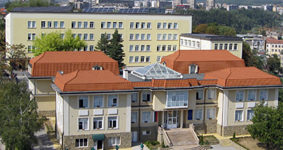

Габрово има традиции в машиностроенето, текстилната промишленост и електротехниката. Градът продължава да бъде важен икономически център.
Техническият университет – Габрово подготвя специалисти и подпомага развитието на бизнеса и индустрията.